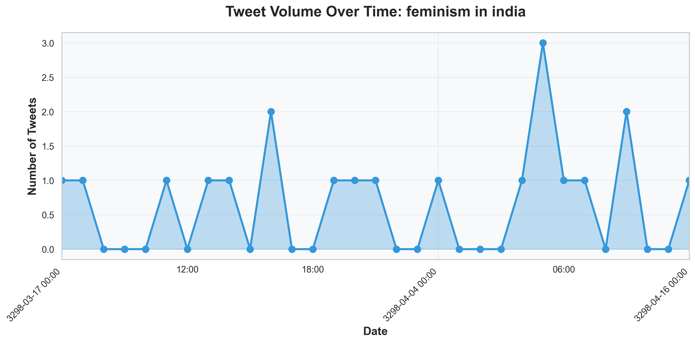
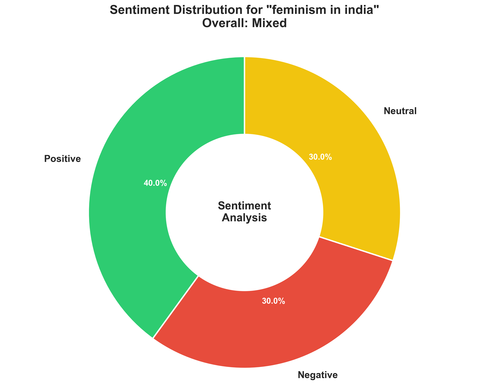
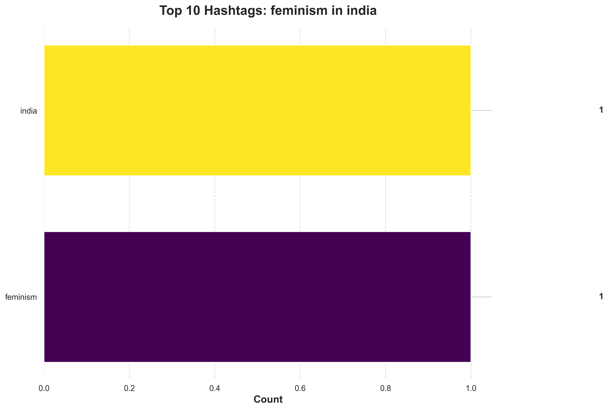
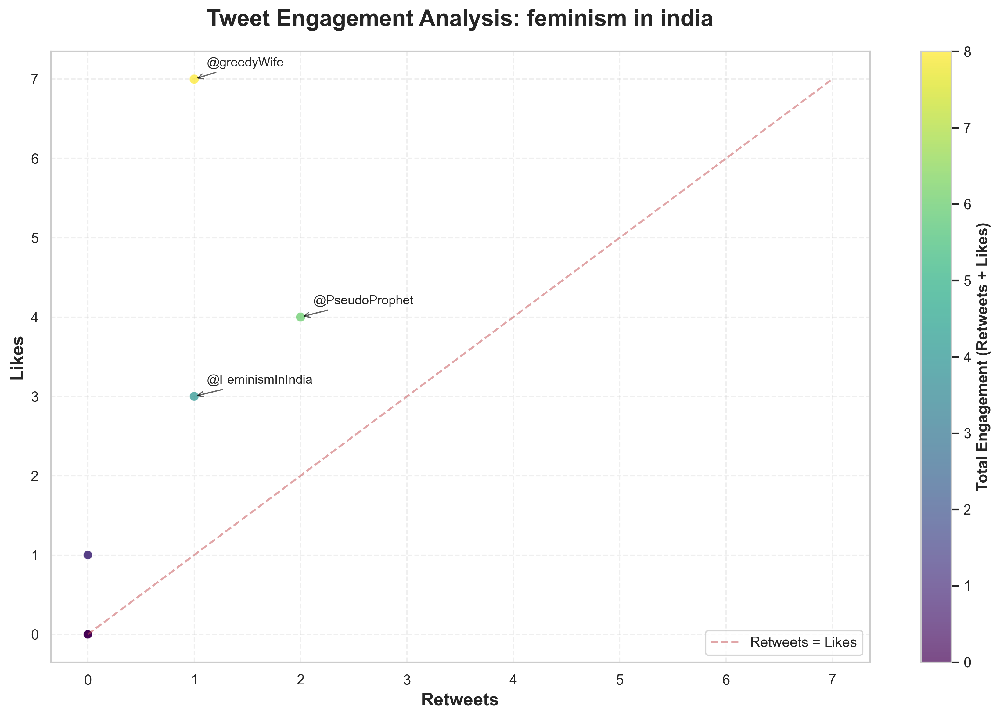

feminism in india Twitter Analysis
Comprehensive analysis of Twitter content related to "feminism in india"
Total Tweets
20
Overall Sentiment
Mixed
Credibility Assessment
Mixed
Key Findings
- Information about feminism in india
Tweet Volume Over Time
Sentiment Analysis
Top Hashtags
Engagement Analysis
Content Word Cloud